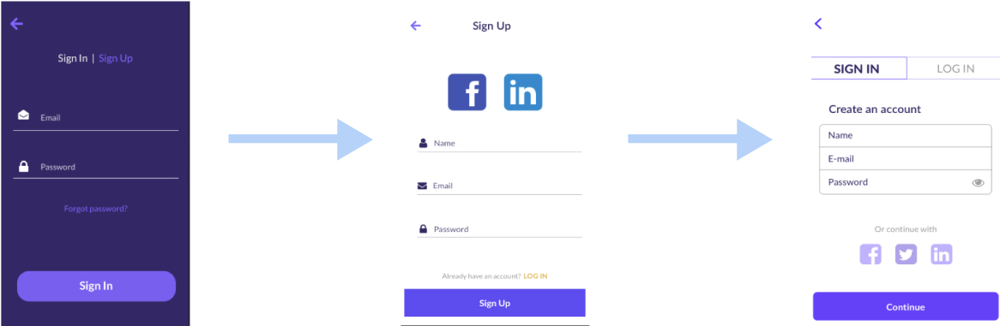
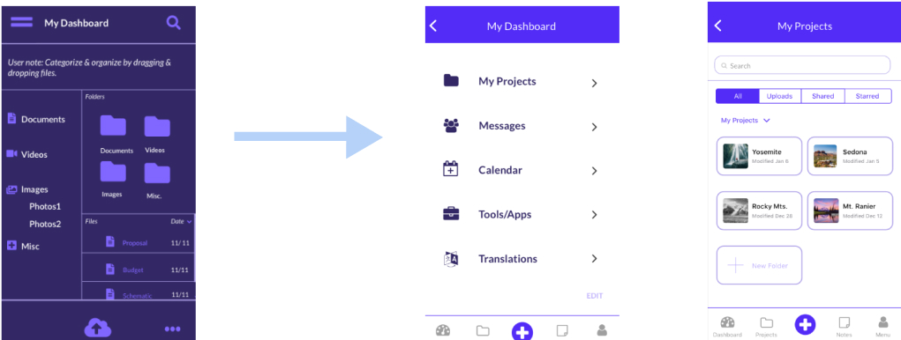
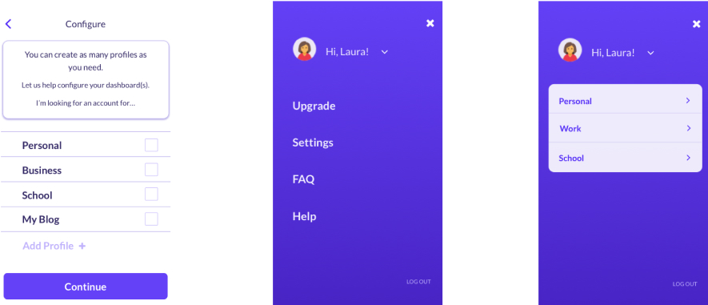
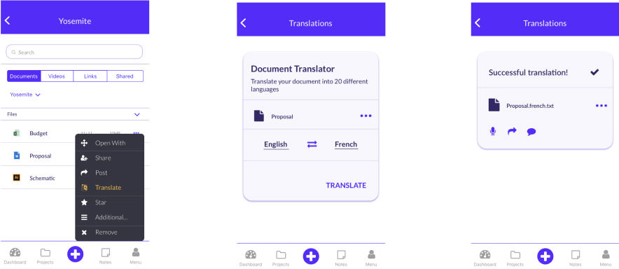
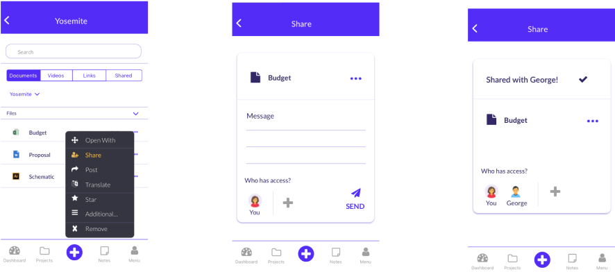

Roles
UX Design
UI Design
Visual Design
Branding
Deliverables
Competitive Analysis
User Personas
User Stories
User Flows
Low-fidelity wireframes
High-fidelity mock-ups
Clickable Prototype
Usability Analysis
Content Strategy
Brand Identity
Logo
Style Guide
Tools
Pen & paper
Sketch
Invision
Adobe Suite
Usability Hub
The Problem
The client was looking to create a cloud storage platform that would serve as a specialized hub for its users.
Before developing, they were seeking to determine a target audience, develop a vision for the layout and craft their brand identity from the ground up.
& The Solution
Atlas aims to improve productivity by allowing the user to switch between profiles seamlessly and by providing more options and intelligent features. Atlas allows users to easily collaborate with peers, colleagues, teachers and mentors all across the world and serves as a hub for individuals who need a central place to store and create content and collaborate.
The Research Phase
Analyzing the Competitors
Key takeaways were that a new app may have a chance in competing with these storage giants if they were to:
1. Create a niche
2. Provide brand new options or features
3. Make sure the app is intuitive and seamless to use on mobile
2. Provide brand new options or features
3. Make sure the app is intuitive and seamless to use on mobile
3. Make sure the app is intuitive and seamless to use on mobile
Surveying Users
I conducted a survey to figure out the user's needs and frustrations to better empathize with their needs to shape the product’s focus and design.
The Results
The users shared that convenience (65.6%), storage space (53.1%), accessibility (50%), a user-friendly interface (43.8%), and price (37.5%) were the leading reasons why they were to choose one platform over another.
Target Demographic
Young students and professionals who need a storage platform that works for the whole scope of their content needs, in the classroom, boardroom, side business, home, etc.
The Takeaway
A model that integrates the stresspoints revealed by the users and focuses on new, practical features could have great appeal to the target demographic and could compete with these well established platforms.
The User
User Personas
Out the survey analysis came two user personas who gave a voice to the target audience.
Jamie is a student in her late 20s. She's looking for an option better geared towards students that is very mobile friendly, with plenty of storage available.
Kris is an ESL teacher and popular blogger. He would like to switch between different profiles so he can tackle tasks at hand for either role. He feels an option to translate text would be an asset.
User Stories
I developed user stories to identify which features and actions should be the main focus while creating the MVP.
User Flows
I designed the following flow to map out how a user would journey through the app.
Wireframes
I turned the flow patterns into wireframes to further illustrate the layout and develop a static design to share with the client and users to test.
User Testing
Users were asked how to:
Sign up for an account
Create new content from the app
Organize a file or folder
Usability testing revealed confusion about:
Signing in
Adding keywords and metadata
What the icons symbolized
In response, I redesigned the login process, how to organize content and share files, and standardized some of the features, such as the sign in form, to ensure tasks would be intuitive for new users.
Brand Identity
Atlas' Evolution
After this initial round of testing and structuring the site design, I started piecing together brand elements. I created a moodboard of imagery in line with the vision to determine the unique qualities of the app.
The words that came to the forefront were vibrant, curious, creative and expressive.
This app was named to hark back to the myth of Atlas supporting the world on his back, tos signal it is a platform that will support the user’s in all of their endeavors.
The Logo
Initially, for the logo I chose a lightning bolt to symbolize being ‘struck’ by an idea.Lightning is a common element in Greek mythology, symbolizing illumination and truth.
The logo is meant to be illustrative of the user embracing a creative thought or spark.
I wanted the logo to feel modern and expressive.
I changed the design and feel of the logo based on feedback from a:b testing. I toned down the visual impact with a softer look for the text, lowercase and lighter weight, and a more visually subtle icon of a globe, placed to the right.
Typography

Avenir Next is a sans-serif typeface, inspired by the geometric style with a softer humanist touch. It feels appropriately expressive for Atlas's logo because it is modern, clean and powerful but rooted in tradition.
Lato is a sans serif typeface with classical proportions to give the letterforms harmony. It works well as a body text for Atlas because it is easily legible, even in small form.
Color Palette
The color pallete is based on rich purple tones and includes gold and white as accents.
Purple represents royalty, power, ambition, wisdom, independence, creativity, mystery; which feels fitting for Atlas.
Style Guide
I created a brand style guide to showcase these choices and demonstrate how they form a cohesive brand.
MockUps
I redesigned the user flow of the login process, adding and organizing content and how to share files. Additionally, I labeled icons I felt may be unclear and standardized some of the features to match iOS design, such as the sign in form, to decrease confusion and ensure tasks would be intuitive to new users.
Feedback pointed out the text was difficult to read because of the purple background. With the second iteration I updated the design to have a white background to improve readability.
User Testing: Round 2
A:B Preference Test
Preference testing revealed that I should work to simplify the layout of each screen down to the essentials.
I tried a more traditional form field that is common for iOS applications. Users prefered Option B because of the familiarity and because of the streamlined aesthetic.
I removed the taskbar on the left and added a toggle switch at the top. This toggle is another common iOS element. The majority chose Option B. Likely due to the fact that the re-design makes better use of the whole screen.
Users preferred a more simplifed aesthetic.
The Prototype
I created a high fidelity prototype to enable the user to test out the platform. This prototype is the result of synthesizing the research, testing and many rounds of design iterations.

Design Evolution
Improved flow
The final version standardized the form, and allows the user to toggle back and forth between sign in and log in.
Improved readability
I separated the dashboard and projects into two separate screens so it’s easier to see the projects and more clear what actions the user can perform.
What sets Atlas apart?
Customizable profiles
Translation feature
Broad network
Reflection
The platform unfolded and evolved based on what was revealed through each phase of the UX cycle.
Through clarifying expectations, and allowing the users to guide the development cycle, I believe I was able to deliver a design that satisfied both stakeholder and user concerns and desires.
In hindsight, I would have tested users even more frequently while iterating through designs to narrow in further on customization options and intelligent features to help Atlas stand out from the competitors. Ultimately, the prototype is a starting point.
To continue supporting the client, I'll develop a cohesive design system to enable the in-house designer to make changes and adjustments across the entire platform. This design system would be a living file to share with the client so they have a framework of their own, beyond the style guide, for building their brand.